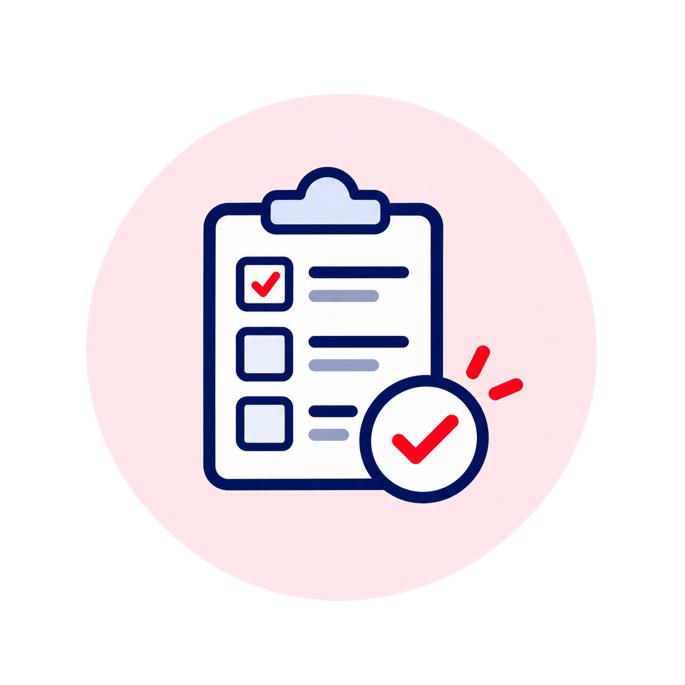
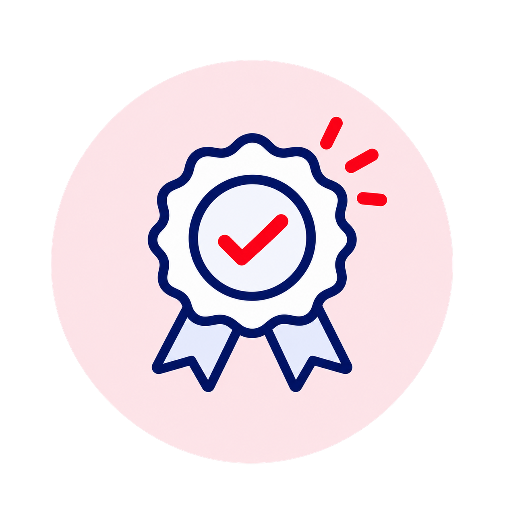

HOME > 인재채용 > 채용프로세스
채용프로세스 RECRUITMENT PROCESS
RECRUITMENT PROCESS
01 RECRUITMENT PROCESS
금호건설과 함께하는
채용의 여정
지원부터 합격까지, 단계별 절차를 확인하세요.
-

- STEP 01지원서 접수
- 채용 공고 확인 후
온라인 지원
-

- STEP 02서류전형
- 지원서를 바탕으로
직무 적합성 검토
-

- STEP 03온라인 인적성
- 기본 역량과
직무 성향 확인
-
- STEP 041차 면접
- 지원 직무의
전문 역량 확인
-
- STEP 052차 면접
- 조직·직무의
종합 적합성 확인
-

- STEP 06최종합격
- 결과 안내 후
입사 절차 진행
전형 안내
채용 분야와 공고에 따라 세부 일정과 절차가 달라질 수 있습니다. 실제 공고 내용을 확인해 주세요.